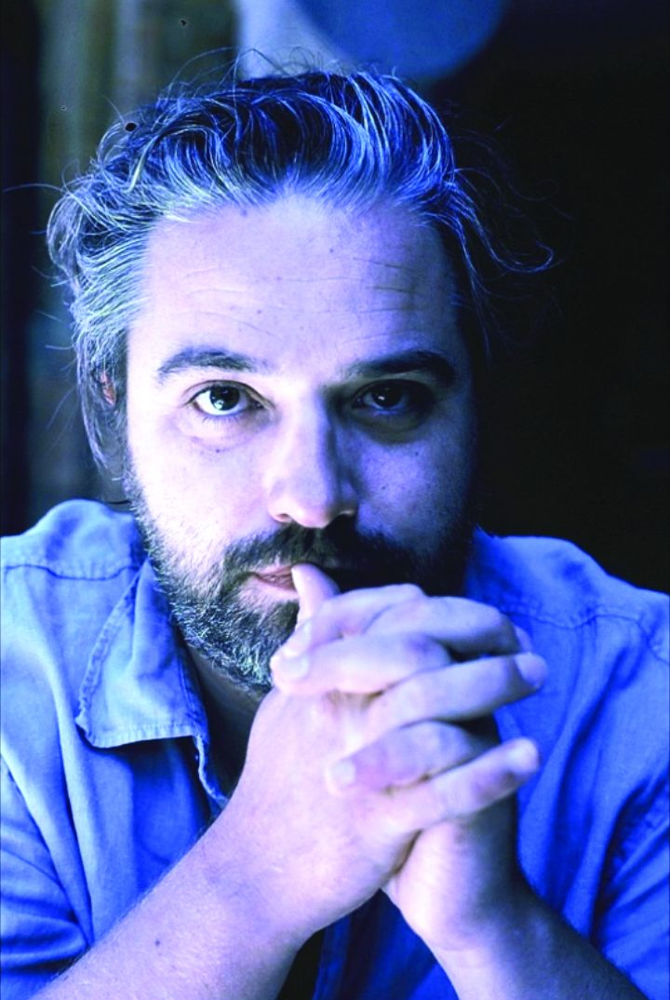

Alan Braxe [Audio]: Delivering the French touch



STREAMING AUDIO INTERVIEW
He’s one of the true masters of the French house scene, having been one of the producers behind seminal late 90s club smasher Music Sounds Better With You by Stardust (his collaboration with Thomas Bangalter of Daft Punk fame). He is Alan Braxe, and later this month he’s coming back to Australia for a rather comprehensive tour.
After the success of Stardust, Braxe launched his own label Vulture. He’s had a number of club classics in the years since, including Intro and Rubicon, and either solo (or with longtime collaborator Fred Falke) he’s also remixed some of the biggest names in pop and electronic music, including Bjork, Britney Spears, Kylie Minogue, Goldfrapp, Kelis, Jamiroquai and Justice. With his tour kicking off next weekend, ITM chats with Alan Braxe about delivering the French touch.
Alan Braxe tour dates:
Thu Oct 23 – Gold Coast, Berlin
Fri Oct 24 – Melbourne, Q Bar
Sat Oct 25 – Perth, Frisk
Thu Oct 30 – Brisbane
Fri Oct 31 – Canberra, Stonefest
Sat Nov 1 – Sydney, YU
Check out this DJ mix from Braxe now streaming on ITM for a taste of what’s in store on his tour!